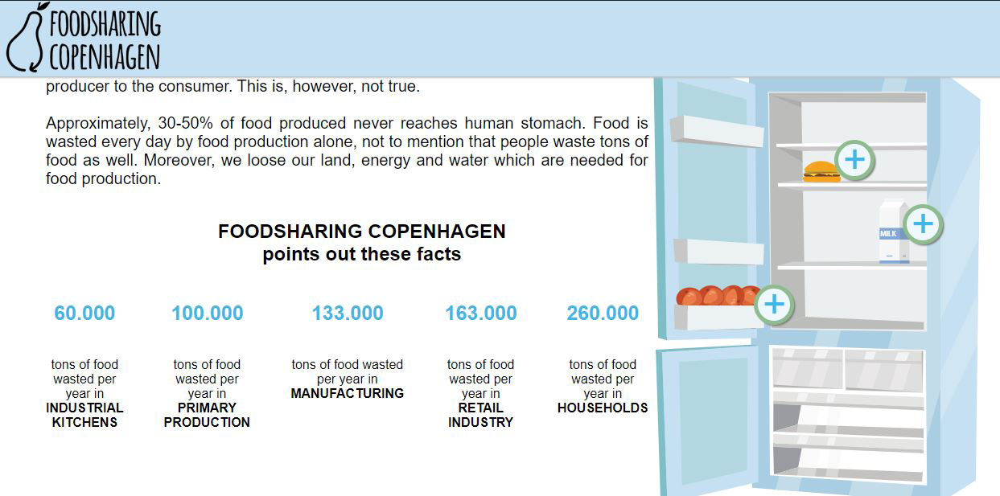
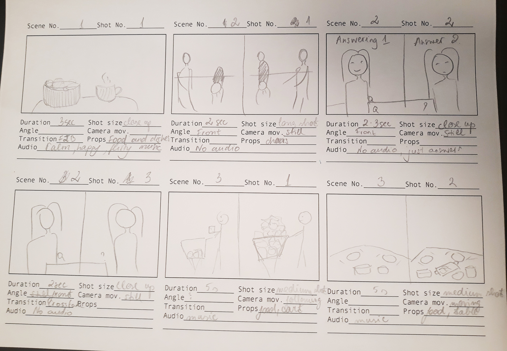
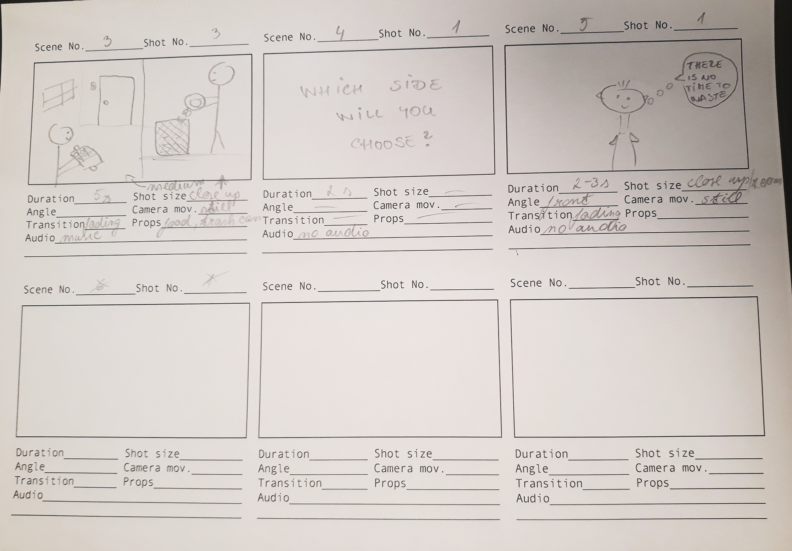
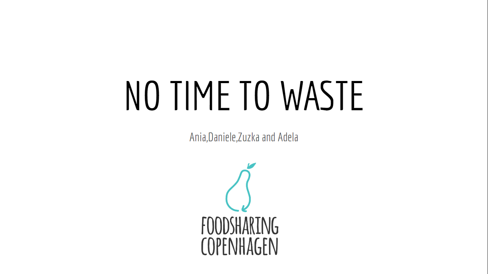

Theme 05: Basic Content
05.02.01 “Foodsharing Copenhagen”. A campaign site including a video.
 Website with videoGoal:
Creating a campaign site that addresses one of the presented two issues. The goal of my group was to create a short video for a particular target audience about food wasting problem and introduce them to the Foodsharing Copenhagen.
Process:
We started the project by creating a Team canvas that defined our roles and expectations of the project. Then we created a detailed Storyboard to plan the production. After that, we could start shooting the video using cameras and audio equipment. While working on the video editing we designed very simple and easy to navigate the one-page campaign site. My personal role was focused on filming the video and editing it in Adobe Premiere Pro. Others were responsible for creating SoMe video, acting and implementing everything that we were working on, to the website by using HTML, CSS, and Javascript.
Gains:
- Using skills regarding target audiences, user experiences and visual expression to engage the user and inspire them to receive the message.
- Learning about challanges during filming process - finding location, planning shots, distributing tasks.
- Llearning how to work with cameras, audio equipment and sound and video editing programs - Adobe Premiere Pro and Adobe Audition.
05.02.03 “Storyboard”
  PDFGoal:
Creating a storyboard for the video to plan the camera angles, shot lenght and other aspects.
Process:
Before shooting the video we had to have a clear idea of what scenes we needed to film, what camera angles, shot lengths, movements, and transitions we would have. Our targeted audience was mostly young people, so we choose a young character to play the most important role in the story. The shooting locations were market aisle and kitchen. We decided to create a story in splited screen for two to show a big contrast between two characters, one aware and one unaware of the food waste problem. The storyboard helped us a lot to visualize potential problems during video production.
Gains:
- Learning about the different dramaturgical elements, shots, colours, composition, and audio effects.
05.02.04 “Customer pitch”.
 PresentationDuring the pitch for Foodsharing Copenhagen, we had to present a description of content with realistic examples and benefits. In this way we could get useful feedback, practice clear communication and work on public speaking.